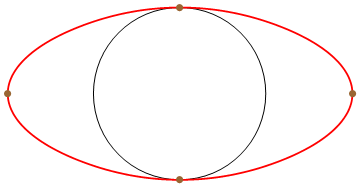
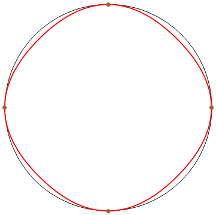
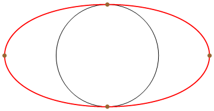

1 Description
For a given set of planar points, I want to generate an interplatory curve going through these points. Because human sightseeing are more sensitive to maxima and minima curvature of a curve, we require the control to be local maximum curvature, (in the meaning of absolute value), so that user can use the interpolated points as control points to manipulate the curve. Also, when the control points are lying on a circle, we want the generated curve to be exact the circle.
Kappa curve [1] provide a scheme to generate a piece-wise quadratic interplatory curve having all input points as local maximum curvature points. Also the curve is $G^2$ continuous except for several inflection points.
2 Functional map on curves
Functional Maps [2] indicated that if we have two manifold $M$ and $N$, and a bijection between them \[T:M\to N\] then this bijection maps induce a bijection between real functions $\mathcal{F}(M,\mathbb{R})$ on $M$ and $\mathcal{F}(N,\mathbb{R})$ on $N$ \[T_F:\mathcal{F}(M,\mathbb{R})\to \mathcal{F}(N,\mathbb{R})\] The claim is that $T$ and $T_F$ are bijection, i.e. given $T_F$ we can compute unique $T$. And if we find a basis of $\mathcal{F}(M,\mathbb{R})$, each function on $M$ can be represented by a series of coefficients responding to the basis. Then $T_F$ can be written as a (infinity) matrix. This method has been used as recovering the map between two manifolds using given relationships between function values on the two manifolds.
The map between two manifolds depend on the understanding of the intrinsic information of the geometry of the manifolds. The core idea of functional map is to find a basis of $\mathcal{F}(M,\mathbb{R})$. However the dimension of $\mathcal{F}(M,\mathbb{R})$ is infinity so we need to use some functions to approximate the basis. Indeed, if we consider the discrete version of the functions over a 3D mesh, the functions are finite dimension. Two basis are introduced in [2] and [3]:
2.1 Hat function
Like a common basis function in finite element method, we treat each vertex of a 3D mesh as a single unit, associated with its Voronoi area as weights. Then the hat function is naturally a basis. This basis is a unit partition of the mesh. And the dimension is the total number of the vertices of the mesh. So this basis is not the best choice because the dimension depends on the sampling of the manifolds.
2.2 Laplace-Beltrami operator
Laplace-Beltrami operator is the extension of Laplacian operator from Euclidean space to surface or Riemann manifolds. If we discrete the manifold as a 3D mesh, the Laplace-Beltrami operator can be written as a n by n matrix $L$, where n is the total number of the vertices of the matrix. The Laplace-Beltrami matrix is diagonal one and the entry $l_{i,j}$ is non-zero only when vertices i and j are adjacent in the mesh.
The eigen value and eigen function of Laplace-Beltrami operator is defined as the solution of equation \[-\Delta u=\lambda u\]. In the discrete version, $\Delta$ is the matrix L and the eigen values and eigen functions are the eigen values and eigen vectors of matrix L. We can simply select the first n (in this project, n=50) eigen functions as the basis of $\mathcal{F}(M,\mathbb{R})$. The advantage is that we can limit the dimension of the functinal space no matter what the sampling of the mesh is.
2.3 Problem of Laplace-Beltrami operator
The original paper [3] says the eigen values of the laplace matrix are distinct so that the eigen functions can span the whole functional space. However, this is not true. When computing on random meshes, this claim is likely to be true. But when the mesh is highly symmetric, for example, standard polytopes, the laplace matrix has duplicated eigen values. For example, the lapace matrix of an Octahedron is \[ \begin{bmatrix} 1 & -\frac{1}{4} & -\frac{1}{4} & -\frac{1}{4} & -\frac{1}{4} & 0 \\ -\frac{1}{4} & 1 & -\frac{1}{4} & 0 & -\frac{1}{4} & -\frac{1}{4} \\ -\frac{1}{4} & -\frac{1}{4} & 1 & -\frac{1}{4} & 0 & -\frac{1}{4} \\ -\frac{1}{4} & 0 & -\frac{1}{4} & 1 & -\frac{1}{4} & -\frac{1}{4} \\ -\frac{1}{4} & -\frac{1}{4} & 0 & -\frac{1}{4} & 1 & -\frac{1}{4} \\ 0 & -\frac{1}{4} & -\frac{1}{4} & -\frac{1}{4} & -\frac{1}{4} & 1 \end{bmatrix} \] and the eigen value of this matrix is $\{0,1,1,1,\frac{3}{2},\frac{3}{2}\}$. The laplace of a standard tetrahedron is \[ \begin{bmatrix} 1 & -\frac{1}{3} & -\frac{1}{3} & -\frac{1}{3}\\ -\frac{1}{3} & 1 & -\frac{1}{3} & -\frac{1}{3}\\ -\frac{1}{3} & -\frac{1}{3} & 1 & -\frac{1}{3}\\ -\frac{1}{3} & -\frac{1}{3} & -\frac{1}{3} & 1 \end{bmatrix} \] and the eigen values are $\{0,\frac{4}{3},\frac{4}{3},\frac{4}{3}\}$
2.4 Analysis on curve
Functional map can be defined on manifolds so obviously it can be used on 2D curve. When sampling a series of points $\{p_i\}$ on a curve, the Voronoi area of each vertex $p_i$ is simply \[\frac{\widehat{p_{i-1}p_i}+\widehat{p_ip_{i+1}}}{2}\] here $\widehat{p_{i-1}p_i}$ is the arc length between $p_{i-1}$ and $p_i$
The laplace matrix for a curve is also as simple as a cyclic matrix: \[ \begin{bmatrix} 1 & -\frac{\widehat{p_1p_2}}{\widehat{p_{-1}p_1}+\widehat{p_1p_2}} & 0 & \cdots & 0 & -\frac{\widehat{p_{-1}p_1}}{\widehat{p_{-1}p_1}+\widehat{p_1p_2}} \\ -\frac{\widehat{p_1p_2}}{\widehat{p_1p_2}+\widehat{p_2p_3}} & 1 & -\frac{\widehat{p_2p_3}}{\widehat{p_1p_2}+\widehat{p_2p_3}} & 0 & \cdots & 0\\ \cdots & \cdots & \cdots & \cdots & \cdots & \cdots \\ 0 & \cdots & -\frac{\widehat{p_{i-1}p_i}}{\widehat{p_{i-1}p_i}+\widehat{p_ip_{i+1}}} & 1 & -\frac{\widehat{p_ip_{i+1}}}{\widehat{p_{i-1}p_i}+\widehat{p_ip_{i+1}}} & 0 \\ \cdots & \cdots & \cdots & \cdots & \cdots & \cdots \\ \cdots & \cdots & \cdots & \cdots & \cdots & \cdots \end{bmatrix} \]
3 Shape Difference
Given two manifolds M and N associating map F:M->N, after constructing the hat function or Laplace-Beltrami basis on the manifolds, one define a shape difference matrix using the laplace matrix and the area weights. There exists some operator D s.t \[ f \cdot D(g) = F(f) \cdot F(g) \] Here D is the difference we want. If both M and N have Laplace-Beltrami basis then definition of the shape difference are: \[ V_{M,N}=F^TF\\ R_{M,N}=(D^M)^{-1}F^TD^NF \] If M has Laplace-Beltrami basis and N has hat basis, then the differences are defined as \[ V_{M,N}=F^TA^NF\\ R_{M,N}=-(D^M)^{-1}F^TW^NF. \] The definition of each matrix above can be found in the orignal paper and I just use it as black boxes. I show the final expression here because there's a typo in the original paper. The orignal one missed the negative sign in the last equation.
3.1 Shape Analogies
The problem can be defined as given mesh A and B, we know a difference from A to B. Now given mesh C, we want to find some D s.t. the difference from C to D is similar to the difference from A to B. If we use G for the functinal map from A to C. Then D can be defined as: \[ D=\min_X||V_{C,X}G-GV_{A,B}||^2+||R_{C,X}G-GR_{A,B}||^2 \]
4 Curve difference
My method to compute some circular curve is that: given a set of points $\{p_i\}$ on a 2D plane. I project the points to $\{q_i\}$ so that $\{q_i\}$ are on a circle. If we call k-Curve interpolating $\{q_i\}$ A, k-Curve interpolating $\{p_i\}$ B and the circle going through $\{q_i\}$ C. Then I can try to find the desired circular curve D using the method in last section
4.1 Sampling on curve
Between each pair of adjacent control points, I just sample the curve of 40 inserted points. Notice the points can't be uniformly sampled because this may cause the laplace matrix to have double eigen values. I uniformly samples the time parameter to sample the curve. Then for each vertex, I compute its Voronoi area as its weight. And use the area weight to build the laplace matrix.
After computing the laplace eigen functions, the eigen function associated with eigen value zero should be discarded.
4.2 Compare two curves
Given two curves, I can sample the two curves in the same points number. Then compute the laplace matrix and the weight matrix for each curve. Functional map can be computed from the laplace matrix of the two curves.
5 Optimization
Because the difference matrix is one-way encoding, i.e. I can compute the difference matrix from two manifold, but I can't use the matrix and one manifold to compute the other manifold. In order to compute the output, I need to go over the whole space to find the solution.
The method I take is that using the input location of the control points $p_i$, associate a positive weight $w_i$ to each control point, $w_i\in(0,+\infty)$. Then I can compute a rational curve X using $\{p_i\}$ and $\{w_i\}$ and solve the minimization: \[ D=\min_{\{w_i\}}||V_{C,X(\{w_i\})}G-GV_{A,B}||^2+||R_{C,X(\{w_i\})}G-GR_{A,B}||^2 \]
This is non-linear optimization and D doesn't have any explicit expression. I used line search to solve and the solving is really slow. The speed of the computing may grow to the main limitation.
6 Result and limitation
This method can generate elliptical curves and when the control points are on a circle, this method can always generate that circle. However, compared to other methods to optimize the weights of the control points to get elliptical curve, I didn't see more advantagses of this one.
 
Fig. Top left one is the input. Project it to a circle, top right one. Then go over all possible shapes of the bottom left one, find one with minimal difference of the differences of each row of the picture.